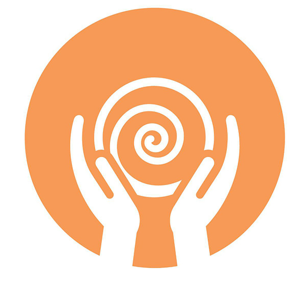

CREATING THE FORM
Creating a piece of pottery is an elegant, beautiful process... if you're a pro! My approach is a bit less seamless, a bit more frenetic.
In the fall of 2023, I signed up for my first ceramics class. (Well, technically I began working with clay as a ten year old at summer camp. I made one pinch pot that summer, and that was the extent of my early career.)
For the first few months of ceramics class, I struggled with each step of the process: wedging (aka kneading) the clay, centering the mound on the wheel, "pulling up" the sides, trimming the partially dried vessel, and - finally - applying the glaze.
My progress has been far from linear, but in general I've come a long way. What started out as a once-a-week hobby has blossomed into a full-blown obsession. If I don't get to the studio a few times a week, I viscerally feel the loss.
Creating a piece of pottery is an elegant, beautiful process... if you're a pro! My approach is a bit less seamless, a bit more frenetic.
I'd initially assumed mastering the wheel was the goal. Then I discovered that "throwing" is only half of the equation. Glazing is just as important.
Since making my first pot in September 2023, I've created about 50 unique pieces. My gallery includes a selection of bowls, plates and mugs.